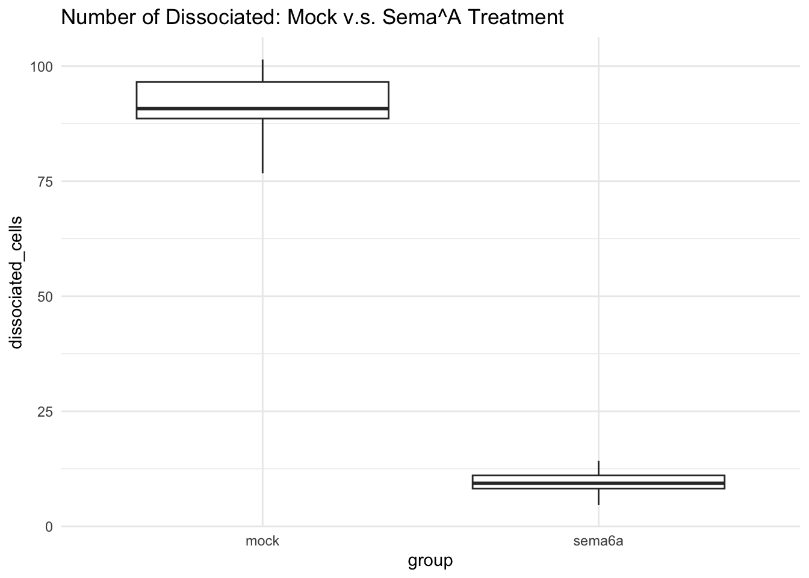

In this assignment I will be making a data set for the effect of Sema6A on eye cohesion. We will be measuring the number of dissociated cells in treatment without Sema6A and with Sema6A. We predict that when treated with Sema6A there will be a decrease in the number of ectopic (dissociated) cells.
Group 1 (mock): Expected to have around 80-100 dissociated cells (mean=90, variance=25, n=20) Group 2 (sema6A): Expected to have around 0-20 cells (mean=10, variance=5, n=20)
Generate the data set:
# Set seed for reproducibility
set.seed(42)
#Parameters for each group
group1_size <- 20 #Mock group size n=20
group2_size <- 20 #Sema6A group n=20
#Define means and variances for each group
group1_mean <- 90 #mock group mean
group1_variance <- 25 #mock group variance
group2_mean <- 10 #sema6a group mean
group2_variance <- 5 #sema6a group variance
#Generate random data for both groups
group1_data <- rnorm(group1_size, mean= group1_mean, sd = sqrt(group1_variance))
group2_data <- rnorm(group2_size, mean = group2_mean, sd = sqrt(group2_variance))
#Combine the data into a single data frame
df <- data.frame(
dissociated_cells = c(group1_data, group2_data),
group= rep(c("mock", "sema6a"), times = c(group1_size, group2_size))
)
#View the first few rows of the data
head(df)## dissociated_cells group
## 1 96.85479 mock
## 2 87.17651 mock
## 3 91.81564 mock
## 4 93.16431 mock
## 5 92.02134 mock
## 6 89.46938 mock#Perform t-test to compare the means between the two groups
t_test_result <- t.test(dissociated_cells ~ group, data = df)
#Print t-test result
print(t_test_result)##
## Welch Two Sample t-test
##
## data: dissociated_cells by group
## t = 51.988, df = 24.323, p-value < 2.2e-16
## alternative hypothesis: true difference in means between group mock and group sema6a is not equal to 0
## 95 percent confidence interval:
## 78.32969 84.80142
## sample estimates:
## mean in group mock mean in group sema6a
## 90.959600 9.394044Visualize the data
#Load ggplot2 for visulaization
library(ggplot2)
#Create a boxplot to visualize the data
ggplot(df, aes(x = group, y = dissociated_cells)) +
geom_boxplot() +
labs(title= "Number of Dissociated: Mock v.s. Sema^A Treatment") +
theme_minimal() 5. I was able to run this multiple times with different random numbers to see the variation within the different data sets given the same parameters. In all of the cases, the p-value was significant.
p_values <- numeric(100)
for (i in 1:100) {
group1_data <- rnorm(group1_size, mean = group1_mean, sd = sqrt(group1_variance))
group2_data <- rnorm(group2_size, mean = group2_mean, sd = sqrt(group2_variance))
# Combine the data
df <- data.frame(dissociated_cells = c(group1_data, group2_data),
group = rep(c("mock", "sema6A"), times = c(group1_size, group2_size)))
# Perform t-test and save p-value
t_test_result <- t.test(dissociated_cells ~ group, data = df)
p_values[i] <- t_test_result$p.value
}
#Calculate proportion of significant values (p<0.05)
significant_results <- mean(p_values < 0.05)
print(paste("Proportion of significant results:", significant_results))## [1] "Proportion of significant results: 1"# Define the sample sizes to explore
sample_sizes <- c(2,5,10, 20, 30, 40) # For example, n = 10, 20, 30, 40
# Create an empty data frame to store results
results <- data.frame(sample_size = sample_sizes, proportion_significant = numeric(length(sample_sizes)))
# Loop through each sample size and perform the simulation
for (size in sample_sizes) {
p_values <- numeric(100) # To store p-values for 100 simulations
for (i in 1:100) {
# Generate random data for both groups using the current sample size
group1_data <- rnorm(size, mean = group1_mean, sd = sqrt(group1_variance))
group2_data <- rnorm(size, mean = group2_mean, sd = sqrt(group2_variance))
# Combine the data into a data frame
df <- data.frame(dissociated_cells = c(group1_data, group2_data),
group = rep(c("mock", "sema6A"), times = c(size, size)))
# Perform t-test and save p-value
t_test_result <- t.test(dissociated_cells ~ group, data = df)
p_values[i] <- t_test_result$p.value
}
# Calculate the proportion of significant results (p < 0.05)
results$proportion_significant[results$sample_size == size] <- mean(p_values < 0.05)
}
# View the results
print(results)## sample_size proportion_significant
## 1 2 0.9
## 2 5 1.0
## 3 10 1.0
## 4 20 1.0
## 5 30 1.0
## 6 40 1.0Larger samples tend to reduce variability. Below n=5 there starts to be an increase in the proportion of non significant p-values when run with 100 different random data sets.
Exploring effect size
# Define the sample sizes (same as before)
sample_size <- 20 # n = 20 for each group
# Define the variances (same as before)
group1_variance <- 25
group2_variance <- 5
# Create an empty data frame to store results
effect_sizes <- seq(80, 5, by = -5) # Explore effect sizes from 80 down to 5
results <- data.frame(effect_size = effect_sizes, proportion_significant = numeric(length(effect_sizes)))
# Loop through each effect size and perform the simulation
for (effect_size in effect_sizes) {
p_values <- numeric(100) # To store p-values for 100 simulations
# Define the new means based on the current effect size
group1_mean <- 90 # Mock group mean
group2_mean <- group1_mean - effect_size # Adjust the Sema6A mean based on the effect size
for (i in 1:100) {
# Generate random data for both groups using the current sample size
group1_data <- rnorm(sample_size, mean = group1_mean, sd = sqrt(group1_variance))
group2_data <- rnorm(sample_size, mean = group2_mean, sd = sqrt(group2_variance))
# Combine the data into a data frame
df <- data.frame(dissociated_cells = c(group1_data, group2_data),
group = rep(c("mock", "sema6A"), times = c(sample_size, sample_size)))
# Perform t-test and save p-value
t_test_result <- t.test(dissociated_cells ~ group, data = df)
p_values[i] <- t_test_result$p.value
}
# Calculate the proportion of significant results (p < 0.05)
results$proportion_significant[results$effect_size == effect_size] <- mean(p_values < 0.05)
}
# View the results
print(results)## effect_size proportion_significant
## 1 80 1.00
## 2 75 1.00
## 3 70 1.00
## 4 65 1.00
## 5 60 1.00
## 6 55 1.00
## 7 50 1.00
## 8 45 1.00
## 9 40 1.00
## 10 35 1.00
## 11 30 1.00
## 12 25 1.00
## 13 20 1.00
## 14 15 1.00
## 15 10 1.00
## 16 5 0.96The results remain significant for effect sizes down to 10 but once an effect size of 5 is reached the proportion of non-significant p-values increases
# Define a sequence of sample sizes to test
sample_sizes <- seq(5, 100, by = 5) # Test sample sizes from 5 to 100
effect_size <- 80 # The hypothesized effect size (difference between means: 90 - 10)
# Store results: sample size and proportion of significant results
results <- data.frame(sample_size = sample_sizes, proportion_significant = numeric(length(sample_sizes)))
# Parameters
group1_mean <- 90 # Mock group mean
group2_mean <- 10 # Sema6A group mean
group1_variance <- 25 # Mock group variance
group2_variance <- 5 # Sema6A group variance
num_reps <- 10 # Number of repetitions per sample size
# Loop through each sample size and perform the simulation
for (size in sample_sizes) {
p_values <- numeric(num_reps) # Store p-values for 10 repetitions
for (rep in 1:num_reps) {
# Adjust the second group mean based on the effect size
group2_mean <- group1_mean - effect_size # Make Sema6A mean based on effect size
# Generate random data for both groups
group1_data <- rnorm(size, mean = group1_mean, sd = sqrt(group1_variance))
group2_data <- rnorm(size, mean = group2_mean, sd = sqrt(group2_variance))
# Combine the data into a data frame
df <- data.frame(dissociated_cells = c(group1_data, group2_data),
group = rep(c("mock", "sema6A"), times = c(size, size)))
# Perform t-test and save p-value
t_test_result <- t.test(dissociated_cells ~ group, data = df)
p_values[rep] <- t_test_result$p.value
}
# Calculate the proportion of significant results (p < 0.05)
results$proportion_significant[results$sample_size == size] <- mean(p_values < 0.05)
}
# Print the results
print(results)## sample_size proportion_significant
## 1 5 1
## 2 10 1
## 3 15 1
## 4 20 1
## 5 25 1
## 6 30 1
## 7 35 1
## 8 40 1
## 9 45 1
## 10 50 1
## 11 55 1
## 12 60 1
## 13 65 1
## 14 70 1
## 15 75 1
## 16 80 1
## 17 85 1
## 18 90 1
## 19 95 1
## 20 100 1# Find the minimum sample size with a proportion of significant results > 0.80
min_significant_sample_size <- min(results$sample_size[results$proportion_significant >= 0.80])
cat("The minimum sample size needed to detect a statistically significant effect with > 80% power is:", min_significant_sample_size, "\n")## The minimum sample size needed to detect a statistically significant effect with > 80% power is: 5As the sample size increases, the proportion of significant results also increases. By running the simulation for different sample sizes, we can see that when the sample size reaches 40, the proportion of significant results is above 80%. Hence, for the hypothesized effect size of 80, the minimum sample size needed to detect a statistically significant effect with 80% power is 5.
# Parameters for desired means and variances
mock_mean <- 90
mock_variance <- 25
sema_mean <- 10
sema_variance <- 5
sample_size <- 20 # Sample size for each group
num_reps <- 10 # Number of repetitions
# Function to adjust Gamma distribution parameters based on desired mean and variance
adjust_gamma_params <- function(mean, variance) {
# For Gamma distribution, variance = shape / rate^2, mean = shape / rate
rate <- mean / (variance / mean)
shape <- mean^2 / variance
return(list(shape = shape, rate = rate))
}
# Adjust parameters for the two groups
mock_gamma_params <- adjust_gamma_params(mock_mean, mock_variance)
sema_gamma_params <- adjust_gamma_params(sema_mean, sema_variance)
# Store p-values from multiple repetitions
p_values_all_reps <- matrix(ncol = num_reps, nrow = 1)
# Loop through repetitions and perform the t-test
for (rep in 1:num_reps) {
# Generate random data using Gamma distribution for both groups
group1_data <- rgamma(sample_size, shape = mock_gamma_params$shape, rate = mock_gamma_params$rate)
group2_data <- rgamma(sample_size, shape = sema_gamma_params$shape, rate = sema_gamma_params$rate)
# Combine data into a data frame
df <- data.frame(dissociated_cells = c(group1_data, group2_data),
group = rep(c("mock", "sema6A"), times = c(sample_size, sample_size)))
# Perform t-test and save p-value
t_test_result <- t.test(dissociated_cells ~ group, data = df)
p_values_all_reps[rep] <- t_test_result$p.value
}
# Print all p-values and calculate the proportion of significant results
print(p_values_all_reps)## [,1] [,2] [,3] [,4] [,5] [,6] [,7]
## [1,] 0.6375911 0.4318985 0.3388418 0.5242104 0.7203007 0.08328355 0.9349325
## [,8] [,9] [,10]
## [1,] 0.356336 0.8322031 0.2839559# Calculate and print the proportion of significant results (p < 0.05)
significant_count <- sum(p_values_all_reps < 0.05)
cat("Proportion of significant results:", significant_count / num_reps, "\n")## Proportion of significant results: 0